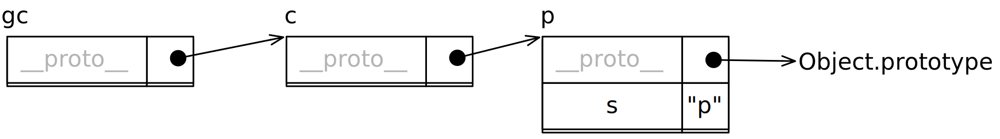
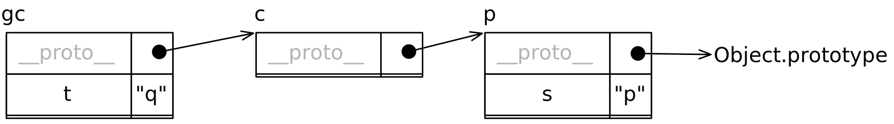
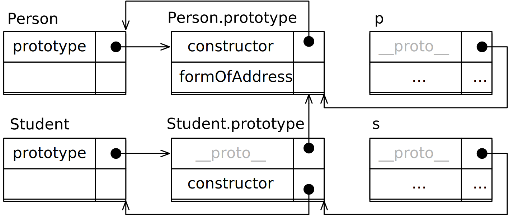

JavaScript und die Webprogrammierung
michael.eichberg@dhbw-mannheim.de, Raum 149B
1.0
Seit 2016 gibt es jährliche Updates (ECMAScript 2016, 2017, 2018, 2019, 2020, 2021, 2022, ...)
Objektorientiert
Protoypische Vererbung
Objekte erben von anderen Objekten.
Objekte als allgemeine Container
(Im Grunde eine Vereinheitlichung von Objekten und Hashtabellen.)
seit ES6 werden auch Klassen unterstützt; diese sind aber nur syntaktischer Zucker.
Skriptsprache
Loose Typing/Dynamische Typisierung
Load and go-delivery (Lieferung als Text/Quellcode)
Garbage Collected
Single-Threaded
Funktionen sind Objekte erster Klasse
Ein (globaler) Namespace
Syntaktisch eine Sprache der "C"-Familie (viele Ähnlichkeiten zu Java)
Standardisiert durch die ECMA (ECMAScript)
Verwendet ganz insbesondere in Browsern, aber auch Serverseitig (Node.js) oder in Desktop-Anwendungen (Electron)
1let i = 1; // double-precision 64-bit binary IEEE 754 value2let f = 1.0; // double-precision 64-bit binary IEEE 754 value3console.log(4Number.MIN_VALUE,5Number.MIN_SAFE_INTEGER,6Number.MAX_SAFE_INTEGER,7Number.MAX_VALUE);8let ib = 1n; // Number.MAX_SAFE_INTEGER 9007199254740991n9console.log(100n === BigInt(100));10let x = NaN;11let y = Infinity;12let z = -Infinity;1314let b = true; // oder false15console.log("Boolean(undefined)", Boolean(undefined));1617// we have the standard operators: +, - , *, /, %, ++, --, **18// and the bitwise operators: &, |, ^, ~, <<, >>, >>>19console.log("i++ ", i++); // 1 oder 2?20console.log("++i ", ++i); // 2 oder 3?21console.log("2 ** 4 ", 2 ** 4);22console.log("7 % 3 ", 7 % 3);232425let _s = "42";26console.log('Die Antwort ist ' + _s); // Template literals (Template strings)27console.log(`Die Antwort ist ${_s}.`); // Template literals (Template strings)28console.log(`29Die Antwort mag ${_s} sein,30aber was ist die Frage?`);3132console.log(String(42)); // "42"333435let anonymousObj = {36i: 1,37u: { j: 2, v: { k: 3 } },38toString: function () { return "anonymousObj"; }39};4041// Zugriff auf die Eigenschaften eines Objekts42anonymousObj.j = 2; // mittels Bezeichner ("j") (eng. Identifier)43anonymousObj["j"] = 4; // mittels String ("j")44anonymousObj["k"] = 3;45console.log("anonymousObj", anonymousObj);46console.log("anonymousObj.toString()", anonymousObj.toString());47delete anonymousObj.toString;48console.log("anonymousObj.toString() [original]", anonymousObj.toString());49console.log("anonymousObj.u?.v.k", anonymousObj.u?.v.k); // Chain-Operator50console.log("anonymousObj.u.v?.k", anonymousObj.u.v?.k);51console.log("anonymousObj.u.q?.k", anonymousObj.u.q?.k);52console.log("anonymousObj.p?.v.k", anonymousObj.p?.v.k);5354let date = new Date("8.6.2024") // ACHTUNG: Locale-Settings55console.log(date);5657let $a = [1];5859let emptyObject = null;6061let func = function () { return "Hello World"; };62console.log(func, func());6364let sym1 = Symbol("1"); // a unique and immutable primitive value65let sym2 = Symbol("1");66let obj1Values = { sym1: "value1", sym2: "value2" };67console.log(obj1Values);68console.log("sym1 in obj1Values: ", sym1 in obj1Values);69let obj2Values = { [sym1]: "value1", [sym2]: "value2" };70console.log("sym1 in obj2Values: ", sym1 in obj2Values);71console.log(obj1Values, " vs. ", obj2Values);7273let u = undefined;747576// We have the standard logical operators: &&, ||, ! and also ??7778/* Operator Madness */79console.log("1 && \"1\": ", 1 && '1');80console.log("null && \"1\": ", null && '1');81console.log("null && true: ", null && true);82console.log("true && null: ", true && null);83console.log("null && false: ", null && false);84console.log("{} && true: ", {} && true);8586// nullish coalescing operator (??) (vergleichbar zu ||)87console.log("1 ?? \"1\": ", 1 ?? '1');88console.log("null ?? \"1\": ", null ?? '1');89console.log("null ?? true: ", null ?? true);90console.log("true ?? null: ", true ?? null);91console.log("null ?? false: ", null ?? false);92console.log("{} ?? true: ", {} ?? true);9394// Nützliche Zuweisungen9596anonymousObj.name ||= "Max Mustermann"
1'use strict';2const Queue = require('./Queue');34const messages = new Queue();56function log(message, ...args) {7messages.enqueue([message]);8messages.enqueue(args);9}1011// Gleichheit == // mit Typumwandlung (auch bei <, >, <=, >=)12// Ungleichheit !==13// strikt gleich === // ohne Typumwandlung14// strikt ungleich !===1516log('1 == "1": ', 1 == "1");17log('1 === "1": ', 1 === "1");18log('1.0 == 1: ', 1 == 1.0);19log('1 === 1n: ', 1 === 1n);2021log("asdf" === ("as"+"df"));2223log('null == NaN: ', null == NaN);24log('null == NaN: ', null == NaN);25log('null == null: ', null == null);26log('null === null: ', null === null);27log('undefined == undefined: ', undefined == undefined);28log('undefined === undefined: ', undefined == undefined);29log('null == undefined: ', null == undefined);30log('null === undefined: ', null == undefined);313233const a1 = [1, 2, 3];34const a2 = [1, 2, 3];35log('a1 == [1,2,3]: ', a1 == [1, 2, 3]);36log('a1 == a1: ', a1 == a1);37log('a1 === a1: ', a1 === a1);38log('a1 === a2: ', a1 === a2);39log('a1 == a2: ', a1 == a2);40log('flatEquals(a1,a2):', a1.length == a2.length && a1.every((v, i) => v === a2[i]));414243let firstJohn = { person: "John" }44let secondJohn = { person: "John" }45let basedOnFirstJohn = Object.create(firstJohn);46log('firstJohn == firstJohn: ', firstJohn == firstJohn);47log('firstJohn === secondJohn: ', firstJohn === secondJohn);48log('firstJohn == secondJohn: ', firstJohn == secondJohn);49log('firstJohn == basedOnFirstJohn: ', firstJohn == basedOnFirstJohn);50log('firstJohn === basedOnFirstJohn: ', firstJohn === basedOnFirstJohn);5152let sym1 = Symbol("1"); // a unique and immutable primitive value53log(sym1, sym1, "===", sym1 === sym1); // true54let sym2 = Symbol("1");55let objValues = { sym1: "value1", sym2: "value2" };56log(objValues);57let obj2Values = { [sym1]: "value1", [sym2]: "value2" };58log(objValues, " === ", obj2Values, " vs. ", objValues === obj2Values);59let obj1Value = { [sym1]: "value1", [sym1]: "value2" };60log(obj2Values, " vs. ", obj1Value);61log(sym1, sym2, "===", sym1 === sym2); // false62log(sym1, sym2, "==", sym1 == sym2); // false63log(Symbol.for("1"), sym1, "==", Symbol.for("1") === sym1);64656667log("\nTyptests und Feststellung des Typs:");68log("typeof obj", typeof obj);69log("obj instanceof Object", obj instanceof Object);70log("obj instanceof Array", obj instanceof Array)717273log("\n?-Operator and Truthy and Falsy Values:");74log("\"\"", "" ? "is truthy" : "is falsy");75log("f()", (() => { }) ? "is truthy" : "is falsy");76log("Array ", Array ? "is truthy" : "is falsy");77log("obj ", obj ? "is truthy" : "is falsy");78log("undefined ", undefined ? "is truthy" : "is falsy");79log("null ", null ? "is truthy" : "is falsy");80log("0", 0 ? "is truthy" : "is falsy");81log("1", 1 ? "is truthy" : "is falsy");8283848586process.stdin.on('data', () => {87const args = messages.dequeue();88for (const arg of args) {89process.stdout.write(String(arg));90process.stdout.write(' ');91}92if (messages.isEmpty()) {93process.exit();94}95});
1'use strict';23const arr = [1, 3, 4, 7, 11, 18, 29];45console.log("\If-elseif-else:");6if (arr.length == 7) {7console.log("arr.length == 7");8} else if (arr.length < 7) {9console.log("arr.length < 7");10} else {11console.log("arr.length > 7");12}1314console.log("\nSwitch:");15switch (arr.length) {16case 7:17console.log("arr.length == 7");18break;19case 6:20console.log("arr.length == 6");21break;22default:23console.log("arr.length != 6 and != 7");24}2526switch ("foo") {27case "bar":28console.log("it's bar");29break;30case "foo":31console.log("it's foo");32break;33default:34console.log("not foo, not bar");35}3637switch (1) { // Vergleich auf strikte Gleichheit (===)38case "1":39console.log("string(1)");40break;41case 1:42console.log("number(1)");43break;44}45464748console.log("\nContinue:");49for (let i = 0; i < arr.length; i++) {50const v = arr[i];51if (v % 2 == 0) continue;52console.log(v);53}5455console.log("\nBreak with label:");56outer: for (let i = 0; i < arr.length; i++) {57for (let j = 0 ; j < i; j++) {58if (j == 3) break outer;59console.log(arr[i], arr[j]);60}61}6263console.log("\nin (properties of Arrays):");64for (const key in arr) {65console.log(key, arr[key]);66}6768console.log("\nof (values of Arrays):");69for (const value of arr) {70console.log(value);71}7273console.log("\nArray and Objects - instanceof:");74console.log("arr instanceof Object", arr instanceof Object);75console.log("arr instanceof Array", arr instanceof Array);7677const obj = {78name: "John",79age: 30,80city: "Berlin"81};8283console.log("\nin (properties of Objects):");84for (const key in obj) {85console.log(key, obj[key]);86}8788/* TypeError: obj is not iterable89for (const value of obj) {90console.log(value);91}92*/939495{96console.log("\nIteration über Iterables (here: Map):");97const m = new Map();98m.set("name", "Elisabeth");99m.set("alter", 50);100console.log("Properties of m: ");101for (const key in m) {102console.log(key, m[key]);103}104console.log("Values of m: ");105for (const [key, value] of m) {106console.log(key, value);107}108}109110{111console.log("\nWhile Loop: ");112let c = 0;113while (c < arr.length) {114const v = arr[c]115if (v > 10) break;116console.log(v);117c++;118}119}120121122{123console.log("\nDo-While Loop: ");124let c = 0125do {126console.log(arr[c]);127c++;128} while (c < arr.length);129}
1// the function (see below) is hoisted, so it can be called before it is defined2hello('Michael');34function hello(person = "World") { // argument with default value5console.log(`fun: Hello ${person}!`);6}78// helloExpr(); // the variable declaration is hoisted, but not the definition!9// So it cannot be called here!10var helloExpr = function() {11console.log('expr: Hello World!');12}1314// Arrow Functions15const times3 = x => x * 3;16console.log("times3(5)", times3(5)); // 1517const helloArrow = () => console.log('arrow: Hello World!');18const helloBigArrow = () => {19const s = "Hello World!";20console.log('arrow: '+s);21return s;22}2324console.log('Hello World!');25helloExpr();26helloArrow();2728var helloXXX = function helloXXX () { // Function Expression with (useless) Name29// console.log(arguments); // arguments is an array-like object30console.log(`Hello: `,...arguments);31}32helloXXX('Michael', 'John', 'Jane');3334function sum(...args) { // rest parameter35console.log("args: " + args);36process.stdout.write("...args: ");37console.log(...args); // we use the spread operator here38return args.reduce((a, b) => a + b, 0); // function nesting39}40console.log(sum(1, 2, 3, 4, 5)); // 1541console.log(sum());424344function* fib() { // generator45let a = 0, b = 1;46while(true) {47yield a;48[a, b] = [b, a + b];49}50}51const fibGen = fib();52console.log(fibGen.next().value); // 053console.log(fibGen.next().value); // 154console.log(fibGen.next().value); // 155console.log(fibGen.next().value); // 256/* Will cause an infinite loop: for (const i of fib()) console.log(i);57// 0 1 1 2 3 5 8 13 21 34 55 89 144 233 377 ... */5859console.log("Done.");
1`use strict`;23// scope is limited to the enclosing function;4// the definition is hoisted (initialized with undefined);5// in modern JS, use let or const instead of var!6var x = "x";78// scope is limited to the enclosing block;9// reference before definition throws an error10let y = "y";1112// scope is limited to the enclosing block13const z = "z";141516function sumIfDefined(a, b) {17if (parseInt(a)) {18var result = parseInt(a); // don't do this in your real code!19} else {20result = 0;21}22const bVal = parseFloat(b);23if (bVal) {24result += bVal25}26return result;27}2829console.log(sumIfDefined()); // 030console.log(sumIfDefined(1)); // 131console.log(sumIfDefined(1, 2)); // 332console.log(sumIfDefined(1, "2")); // 333console.log(sumIfDefined(undefined, "2")); // 2343536function global_x() {37console.log(x,y);3839// const y = ''; // => the previous line throws an error because y is not defined4041console.log(x, y, z); // 1 2 342}4344function local_var_x() {45console.log(x);46// console.log(y); // y is not defined4748var x = 1; // the declaration of var is hoisted, but not the initialization49let y = 2;50const z = 3;5152console.log(x, y, z); // 1 2 353}545556console.log("Start:", x, y, z); // 0 0 057global_x();58local_var_x();596061console.log("Last:", x, y, z); // 0 0 0
1let [a,b] = [1,2,3,4]; // array destructuring2console.log(a,b); // 1345let {a : x, b : y} = {a: "a", b: "b"}; // object destructuring6console.log(x,y); // 17let {a : u, b : v, ...w} = {a: "+", b: "-", c :"*", d:"/"}; // object destructuring8console.log(u,v,w); // + - {c: "*", d: "/"}910let {k1 , k2} = {a: "a", b: "b"}; // object destructuring11console.log(k1,k2); // undefined undefined // k1 and k2 are not defined in the object
1const someJSON = `{2"name": "John",3"age": 30,4"cars": {5"American": ["Ford"],6"German": ["BMW", "Mercedes", "Audi"],7"Italian": ["Fiat","Alfa Romeo", "Ferrari"]8}9}10`1112const someObject = JSON.parse(someJSON);13someObject.age = 31;14someObject.cars.German.push("Porsche");15someObject.cars.Italian.pop();16console.log(someObject);17console.log(JSON.stringify(someObject, null, 2));
Built-in support by means of regular expression literals and an API
Use Perl syntax
Methods on regular expression objects: test (e.g., RegExp.test(String)).
Methods on strings that take RegExps: search, match, replace, split,...
1{2const p = /.*[1-9]+H/; // a regexp3console.log(p.test("ad13H"));4console.log(p.test("ad13"));5console.log(p.test("13H"));6}78{9const p = /[1-9]+H/g;10const s = "1H, 2H, 3P, 4C";11console.log(s.match(p));12console.log(s.replace(p, "XX"));13}
this ist ein "zusätzlicher" Parameter, dessen Wert von der aufrufenden Form abhängt
this ermöglicht den Methoden den Zugriff auf ihr Objekt
this wird zum Zeitpunkt des Aufrufs gebunden (außer bei Arrow-Funktionen)
1//"use strict";23function counter () {4// console.log(this === globalThis); // true5if(this.count) // this is the global object if we don't use strict mode6this.count ++;7else {8this.count = 1;9}1011return this.count;12}1314const counterExpr = function () {15if(this.count)16this.count ++;17else {18this.count = 1;19}2021return this.count;22}2324const counterArrow = () => {25console.log(this);26console.log(this === globalThis);27this.count = this.count ? this.count + 1 : 1;28return this.count;29}3031console.log("\nCounter");32console.log(counter()); // 133console.log(counter()); // 234console.log(`Counter (${globalThis.count})`);3536console.log("\nCounterExpression");37console.log(counterExpr()); // 338console.log(counterExpr()); // 43940console.log("\nCounter");41const obj = {};42console.log(counter.apply(obj)); // 1 - we set a new "this" object!43console.log(counterExpr.apply(obj)); // 24445console.log(`\nCounterArrow (${this.count})`);46console.log(counterArrow.apply(obj)); // 147console.log(counterArrow.apply(undefined)); // 248console.log(counterArrow.apply()); // 349console.log(counterArrow.apply(obj)); // 450console.log(counterArrow.apply({})); // 55152console.log("\nCounter (global)");53console.log(counter());54console.log(counterExpr());
1const p = { s : "p" };2const c = Object.create(p);3const gc = Object.create(c);
1const p = { s : "p" };2const c = Object.create(p);3const gc = Object.create(c);4gc.t = "q";
Pseudoclassical Inheritance
1function Person(name, title){ this.name = name; this.title = title; } // constructor2Person.prototype.formOfAddress = function (){3const foa = "Dear ";4if(this.title){ foa += this.title+" "; }5return foa + this.name;6}7function Student(name, title, id, email) { // constructor8Person.call(this, name, title);9this.id = id;10this.email = email;11}12Student.prototype = Object.create(Person.prototype);13Student.prototype.constructor = Student;1415const aStudent = new Student("Emilia Galotti", "Mrs.", 1224441, 'emilia@galotti.com');
Objektabhängigkeiten
1function Person(name, title){ … }2Person.prototype.formOfAddress = function (){ … }34function Student(name, title, id, email) { … }5Student.prototype = Object.create(Person.prototype);6Student.prototype.constructor = Student;78const p = new Person(…); const s = new Student(…);
1console.log({}.__proto__)2console.log(Array.prototype)3console.log(Array.prototype.__proto__)4console.log(Array.prototype)56try {7let a = [1];8console.log(a.fold());9} catch (error) {10console.log("error: ", error.message)11}1213// THIS IS NOT RECOMMENDED!14// IF ECMAScript EVENTUALLY ADDS THIS FUNCTIONALITY,15// IT MAY CAUSE HAVOC.16Array.prototype.fold = function (f) {17if (this.length === 0) {18throw new Error("array is empty");19} else if (this.length === 1) {20return this[0];21} else {22let result = this[0];23for (let i = 1; i < this.length; i++) {24result = f(result, this[i]);25}26return result;27}28}2930let a = [1,10,100,1000];31console.log(a.fold((a,b) => a + b));323334let o = { created : "long ago" };35var p = Object.create(o);36console.log(Object.getPrototypeOf(o));37console.log(o.isPrototypeOf(p));38console.log(Object.prototype.isPrototypeOf(p));
1class Figure {2calcArea() {3throw new Error('calcArea is not implemented');4}5}6class Rectangle extends Figure {7height;8width;910constructor(height, width) {11this.height = height;12this.width = width;13}1415calcArea() {16return this.height * this.width;17}1819get area() {20return this.calcArea();21}2223set area(value) {24throw new Error('Area is read-only');25}26}2728const r = new Rectangle(10, 20);29console.log("r instanceof Figure", r instanceof Figure); // true30console.log(r.width);31console.log(r.height);32console.log(r.area); // 2003334try {35r.area = 300; // Error: Area is read-only36} catch (e) {37console.log(e.message);38}3940class Queue {41#last = null;42#first = null;43constructor() { }44enqueue(elem) {45if (this.#first === null) {46const c = { e: elem, next: null };47this.#first = c48this.#last = c49} else {50const c = { e: elem, next: null };51this.#last.next = c;52this.#last = c;53}54}55dequeue() {56if (this.#first === null) {57return null;58} else {59const c = this.#first;60this.#first = c.next;61return c.e;62}63}64isEmpty() {65return this.#first === null;66}67}
1<html lang=en>2<head>3<meta charset="utf-8">4<meta name="viewport" content="width=device-width, initial-scale=1.0">5<title>DOM Manipulation with JavaScript</title>6<script>7function makeScriptsEditable() {8const scripts = document.getElementsByTagName('script')9for (const scriptElement of scripts) {10scriptElement.contentEditable = true;11scriptElement.style.display = 'block';12scriptElement.style.whiteSpace = 'preserve';13scriptElement.style.padding = '1em';14scriptElement.style.backgroundColor = 'yellow';15}16}17</script>18</head>19<body>20<h1>DOM Manipulation with JavaScript</h1>21<p id="demo">This is a paragraph.</p>22<button type="button"23onclick="24document.getElementById('demo').style.color = 'red';25makeScriptsEditable();">26Magic!27</button>2829<script>30const demoElement = document.getElementById('demo');31demoElement.addEventListener(32'mouseover',33() => demoElement.style.color = 'green'34);35demoElement.addEventListener(36'mouseout',37() => demoElement.style.color = 'unset'38);39</script>4041<p>Position der Mouse: <span id="position"></span></p>42<script>43window.addEventListener('mousemove', () => {44document.getElementById('position').innerHTML =45`(${event.clientX}, ${event.clientY})`;46});47</script>4849</body>50</html>
1<html lang=en>2<head>3<meta charset="utf-8">4<meta name="viewport" content="width=device-width, initial-scale=1.0">5<title>Eventhandling</title>6</head>7<body>8910<script>11const box = document.getElementById('box');12let color = 0;13const setColor = () => {14color = (color + 1) % 512 ;15let rgb = color16if (rgb > 255) rgb = 256-(rgb-255);17// console.log(rgb);18document.body.style.backgroundColor =19`rgb(${rgb}, ${rgb}, ${rgb})`;20};21setInterval(setColor,10); // the function setColor is called every 10ms2223function getUsers() {24fetch('http://127.0.0.1:4080/users')25.then(response => response.json())26.then(users => {27const usersElement = document.getElementById('users');28usersElement.innerText = JSON.stringify(users);29});30}31</script>3233<div id=users> </div>34<button onclick="getUsers()">Get Users</button>35</body>36</html>